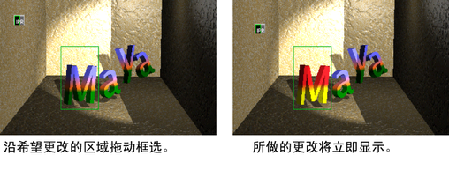
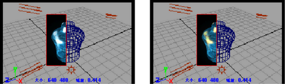

仅支持此功能用于软件渲染；例如，在使用 Maya 软件渲染器时。Maya 硬件 2.0 不支持此功能。如果使用 Arnold for Maya 渲染器，另请参见 Arnold 渲染视图窗口。
当围绕整个场景或场景的一部分拖动框选（渲染区域）时，IPR 图像将开始更新。如果更改灯光、阴影、材质、纹理和后期处理（特殊效果），例如辉光和雾，您可以交互式地查看更改的结果。
有关 IPR 渲染的详细信息，请参见关于交互式真实照片级渲染 (IPR)。
注： 在 IPR 会话期间使用的内存数量可能是相当大的。“渲染视图”(Render View)的右上角会显示当前 IPR 调节区域所使用的内存数量。
以交互方式可视化场景调整
- 执行下列操作之一：
- 单击要渲染的场景视图，然后从“状态行”(Status Line)或从“渲染视图”(Render View)（如果已打开）单击“IPR 渲染”(IPR Render)按钮。场景将显示在“渲染视图”(Render View)，并且 IPR 图像将被创建。
- 若要载入现有的 IPR 文件，请选择“文件 > 打开 IPR 文件...”(File > Open IPR File...)，然后选择文件。
- 框选选择“渲染视图”(Render View)中 IPR 渲染图像的某个区域。
注： 在开始修改渲染属性之前，必须选择一个区域。选择的区域确定 IPR 重新调整区域所需的内存量。
- 调整场景，例如，添加灯光或修改材质和纹理属性。
选定区域的 IPR 图像将在调整场景时更新。
- 若要渲染其他视图，请在“渲染视图”(Render View)中选择，然后从下拉列表中选择一个视图。
- 如果更改视图（例如翻滚或缩放，或将新的元素添加到场景）并想要更新结果，请在“渲染视图”(Render View)或 Maya 主菜单栏的“渲染”(Render)菜单中单击“重做上一次 IPR 渲染”(Redo Previous IPR Render)图标。
- 如果您仅希望更改某些图元（如照明或纹理），而不想更改视图，只需围绕要更新的对象或对象的一部分拖动框选。结果将导致“渲染视图”(Render View)是实时的。

提示：
在框选区域之后，可以将材质和纹理拖动到区域内的对象中，就像通过拖动将样例从“Hypershade”连接到曲面的视图一样。
暂停、取消或保存 IPR 渲染
若要暂停一个 IPR 渲染
- 按暂停按钮。
若要取消某个 IPR 渲染
- 按 Esc 键。
在 IPR 渲染将停止。不能调整已取消的“IPR 渲染”(IPR Render)；要调整区域必须执行完整的“IPR 渲染”(IPR Render)。
若要保存 IPR 文件
- 选择。将显示“保存 IPR 文件”(Save IPR File)窗口。键入文件的名称，然后单击“保存”(Save)。
注： 因为 IPR 文件保存了除可见颜色信息以外的所有深光栅信息，IPR 文件可能会非常大。确保有足够的磁盘空间。
批渲染 IPR 文件
您可以从命令行批渲染 IPR 文件。
有关批渲染或命令行渲染的详细信息，请参见关于从 Maya (UI) 中进行批渲染和关于命令行渲染。
使用 Maya 软件渲染器批渲染 IPR 文件
- 在抽壳或命令行中，键入：
Render -r sw -ipr true <scene>
有关从命令行批渲染的信息和标志，请参见
关于命令行渲染。
注释：
- 不能从 Maya 批渲染 IPR 文件。
- 批渲染产生的 IPR 文件不是多线程。
